Leave the terminal. The work keeps going.
keepane is a terminal multiplexer. It keeps the programs in your terminal running, lets panes pass work to each other, and lets AI agents work together in one workspace.
Close the terminal window and the programs keep running. One pane can send a command to another, or hand a task to an agent that is already running. From another computer or your phone, you can check progress and pick the work up again.
The tmux keys, commands and config file you know keep working. It runs on Windows, Linux and macOS.
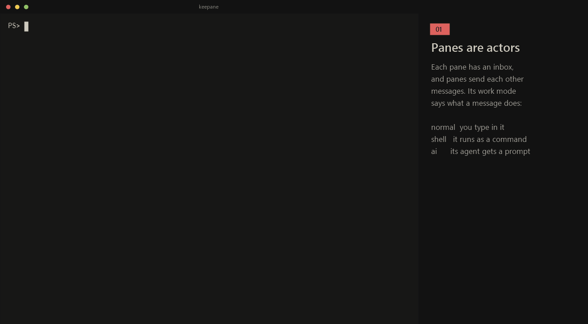
Panes pass work to each other
Most terminal multiplexers organise windows and panes.
keepane also lets panes talk to each other.
Give a pane a name, and you can send it messages and tasks.
# name pane 3 "builder"; it runs what it is sent at its prompt
keepane rename-pane -t %3 builder
keepane set-work-mode -t %builder shell
# send it a task
keepane send-message -t %builder "cargo test"
# what became of it (#12 is the number send-message printed)
keepane trace-message 12 -w 600Each pane has a work mode:
- normal (the default): messages wait in the inbox; the program in the pane reads them with
read-message. - shell: the shell runs each message as a command, once it is back at its prompt.
- ai: messages wait in the inbox, and go to the agent when its current turn ends.
Every message records where it came from, its state and its result. Several messages can form one task chain, with how long each step waited and how long it ran.
No copying terminal output by hand, and no keeping an eye on another window.
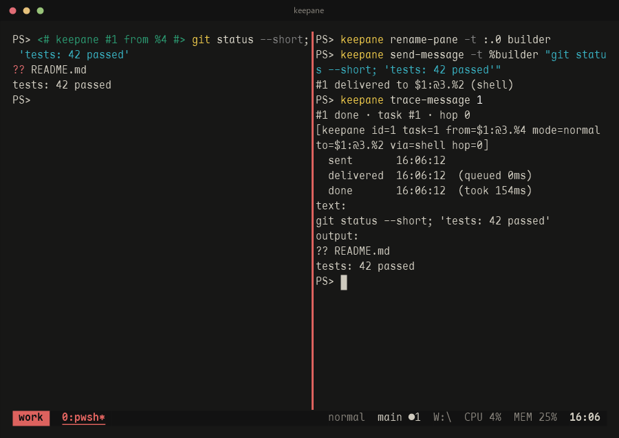
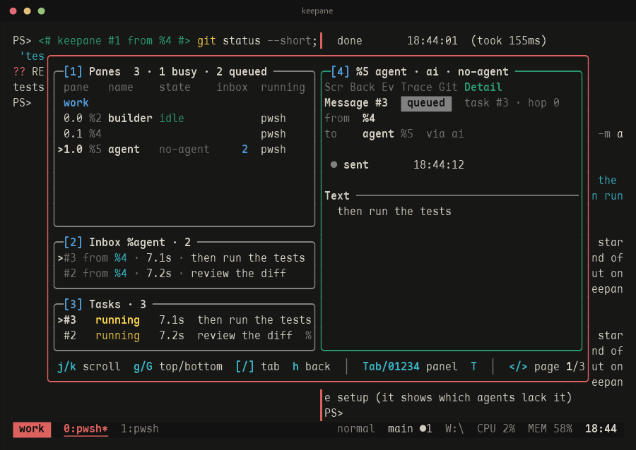
AI agents working together in one workspace
keepane works with Claude Code, Codex, Gemini CLI, Cursor CLI, opencode, pi and other agents through MCP.
An agent is no longer a command-line program on its own: it can reach other panes, send messages, wait for replies, and make panes of its own to work in.
For example:
- One agent analyses the code.
- Another agent writes the feature.
- A third agent runs the tests.
- When a test fails, its output goes to the agent that fixes it.
keepane carries the messages and records the state of each task. Each agent decides how to do its own task.
See what an agent is doing
Not only its terminal output. keepane reads each agent's transcript and shows:
- The model it uses
- The tokens it has used
- How full its context is
- What it has cost so far
- Its CPU and memory
Follow what an agent did
Trace lays out an agent's run as a timeline.
Model calls, file reads, code edits, commands, browser actions and other tool calls appear in the order they ran, each with how long it took and its result.
When a step fails, you can see why.
You learn not only whether the agent finished the task, but how it did it.
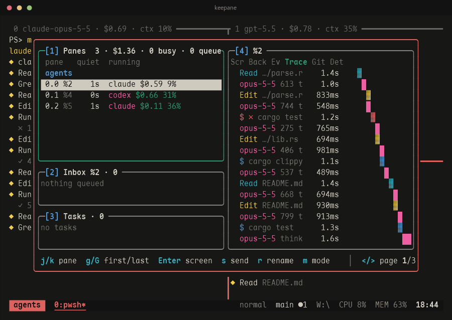
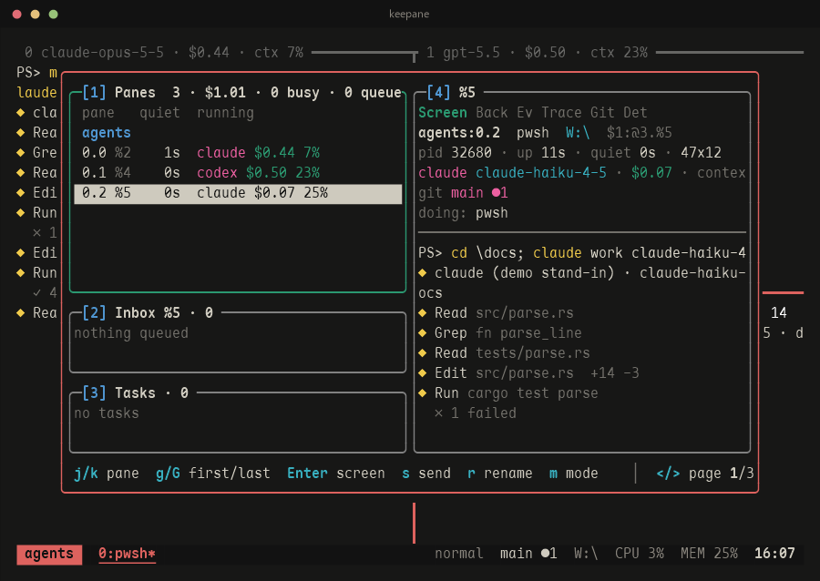
Close the terminal, keep the work
A long task should not stop because a terminal window closed.
# detach from this terminal
# Ctrl-b d
# attach again
keepane attachkeepane saves the layout of sessions, windows and panes, with each pane's program, working directory and terminal output.
Even after the computer restarts, the next time keepane starts it can bring back the workspace it saved.
By default it keeps the recent terminal output; it can keep the whole scrollback instead.
Closed a pane or a window by mistake? Within the keep time you can bring it back.
Builds, tests, deploys and long agent runs no longer depend on a terminal window staying open.
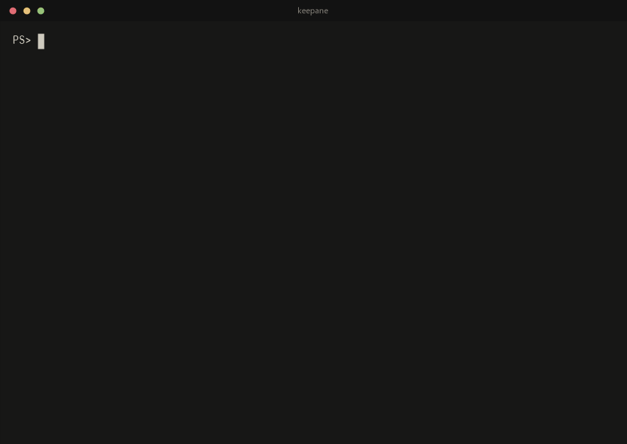
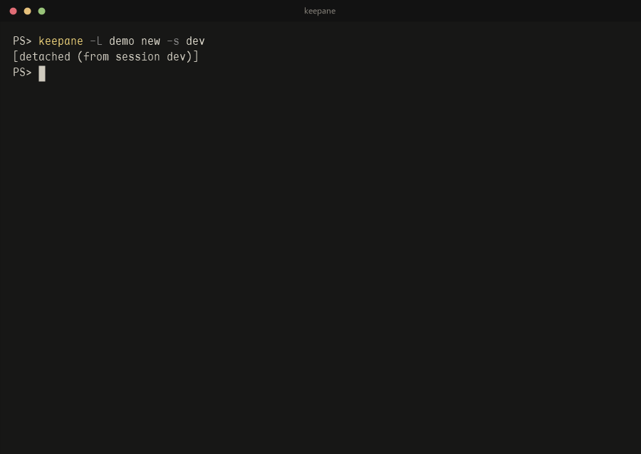
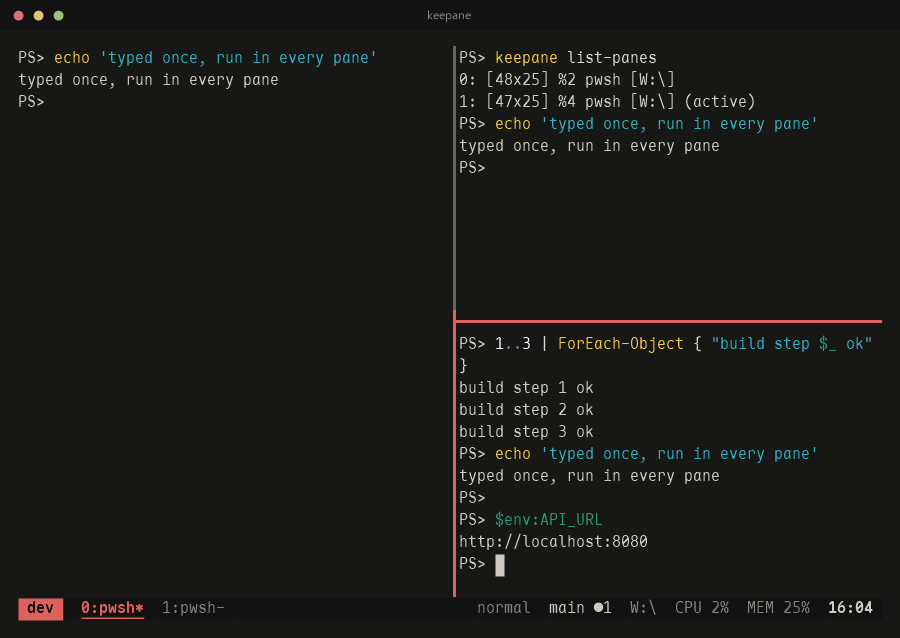
Pass work between two computers
Sometimes the work happens on more than one computer.
The desktop runs the agents and the laptop checks the results, say, or two development machines share the tasks.
keepane pairs two computers. After pairing you can:
- See the panes the other computer shares.
- Send messages and commands to its panes.
- Read what its panes show.
- Attach to its sessions, once it allows that.
Agents can do the same through MCP.
Each machine has its own key. After pairing, each machine still decides which sessions, windows and panes it shares.
It works on one local network, or through a private network such as Tailscale.
See and use your terminal from your phone
A long task does not need you at the computer the whole time.
Run:
keepane webScan the QR code it prints, and your phone's browser shows the panes on your computer.
No app to install.
You can watch the live output, switch panes, type commands, send messages to agents, and see when tasks finish.
When a command ends, or an agent finishes its turn or waits for your permission, a notification tells you.
It posts to ntfy, Feishu, WeCom, DingTalk, Slack, Discord and others.
The phone shows and types; the commands still run on the computer.
The web page is off until you start it. To reach it from outside your network, go through a private network such as Tailscale.
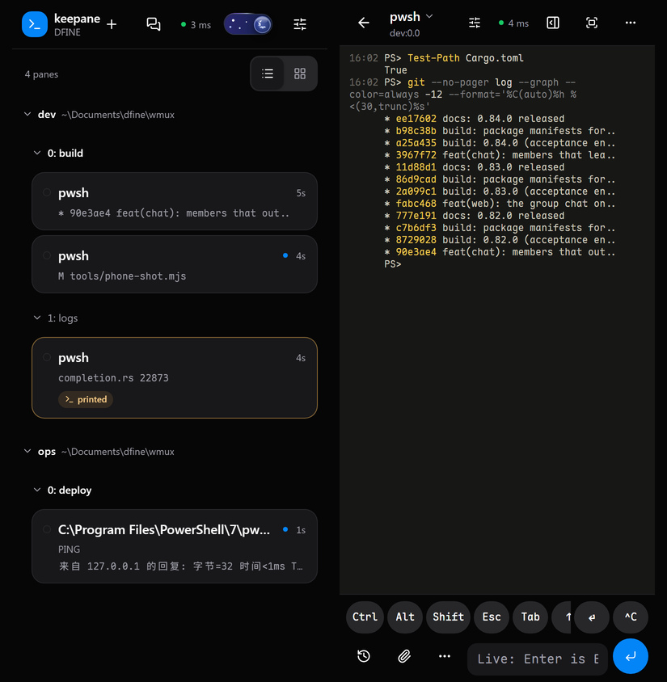
The tmux habits you already have
keepane does not ask you to learn a new way of using the terminal.
The common tmux commands, keys and config file stay compatible as far as possible.
# split left and right
Ctrl-b %
# split top and bottom
Ctrl-b "
# move between panes
Ctrl-b h/j/k/l
# zoom the current pane
Ctrl-b z
# sessions, windows and panes
Ctrl-b w
# detach
Ctrl-b dImport the .tmux.conf you have:
keepane import-config ~/.tmux.confWhat keepane understands becomes keepane config; what it does not support yet stays in the file, with the reason.
On Windows it uses ConPTY and the Win32 console API, so PowerShell, cmd and WSL run directly.
PSReadLine, input methods and full-screen terminal programs work as usual.
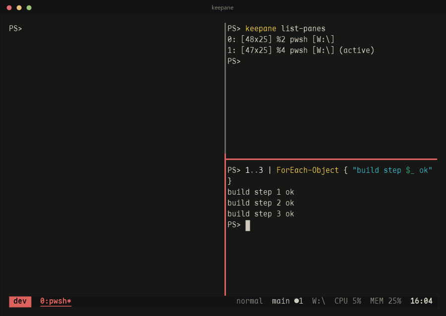
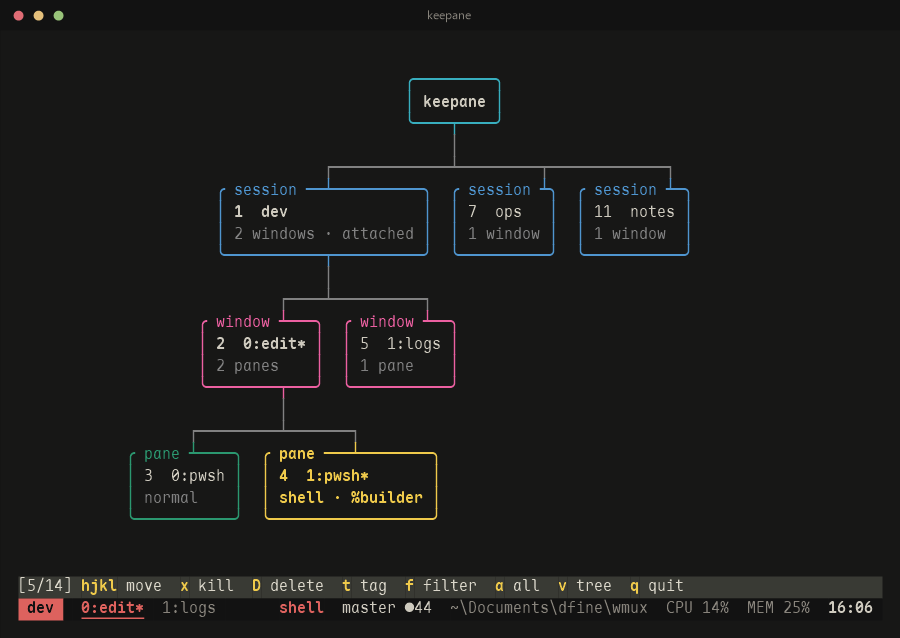
Install
keepane is written in Rust, with builds for Windows, Linux and macOS.
macOS / Linux
brew install newdee/tap/keepaneWindows
The MSI installer, from the releases page, or winget:
winget install newdee.keepaneScoop
scoop install https://raw.githubusercontent.com/newdee/keepane/master/packaging/scoop/keepane.jsonFrom source
cargo install --git \
https://github.com/newdee/keepane --lockedMore ways to install, and how to use it: github.com/newdee/keepane
One workspace, not just a few terminal windows
keepane starts from the panes and sessions you know from tmux, and adds messages between them, agents working together, tracing and remote access.
Keep using the terminal as you always have, or let several agents split the work across panes and connect what they do.